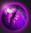
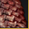
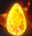
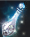
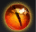
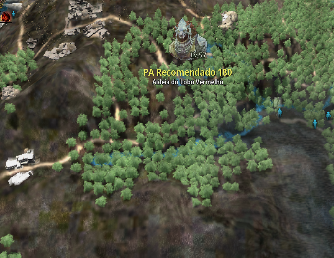

💰 Loot do Mapa
⭐ itens

Acessórios e Materiais




* Lixo do spot: 10.000 pratas por unidade.
📍 Localização (GPS)

Localizado ao Norte de Duvencrune. É um dos spots mais populares de Drieghan devido à peça da poção infinita. Recomendamos a rota próxima ao Gerenciador de Base.